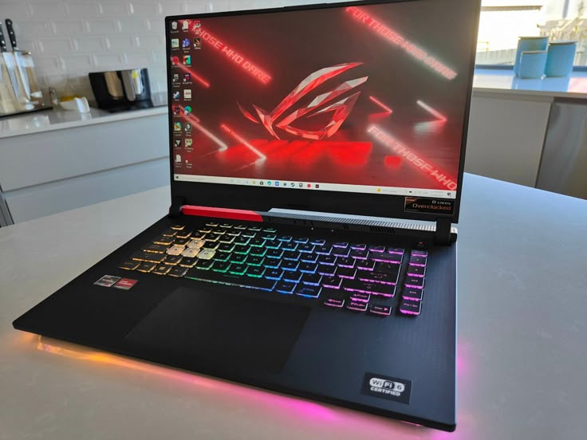
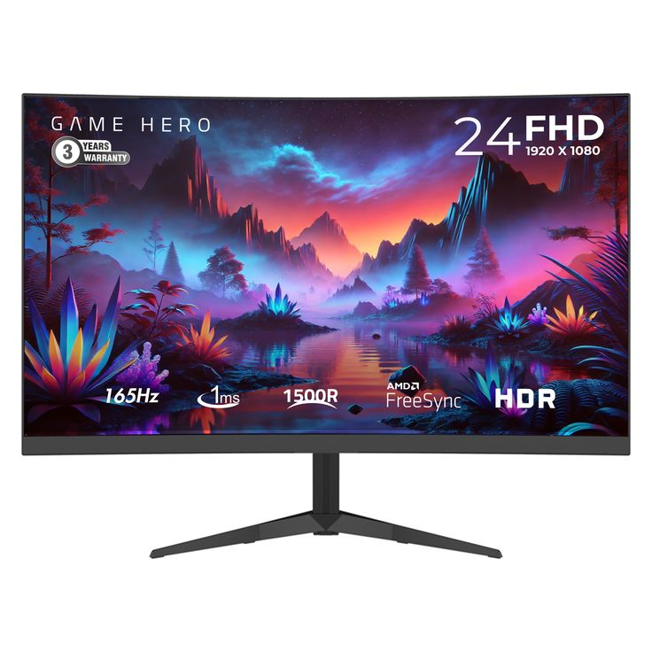
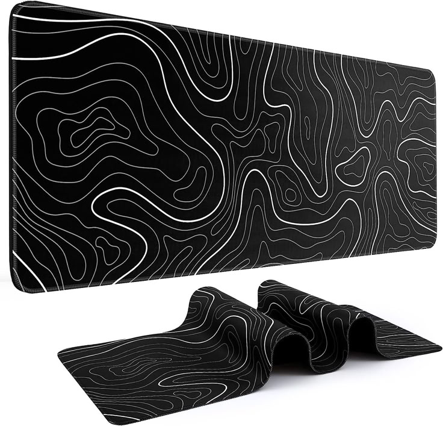
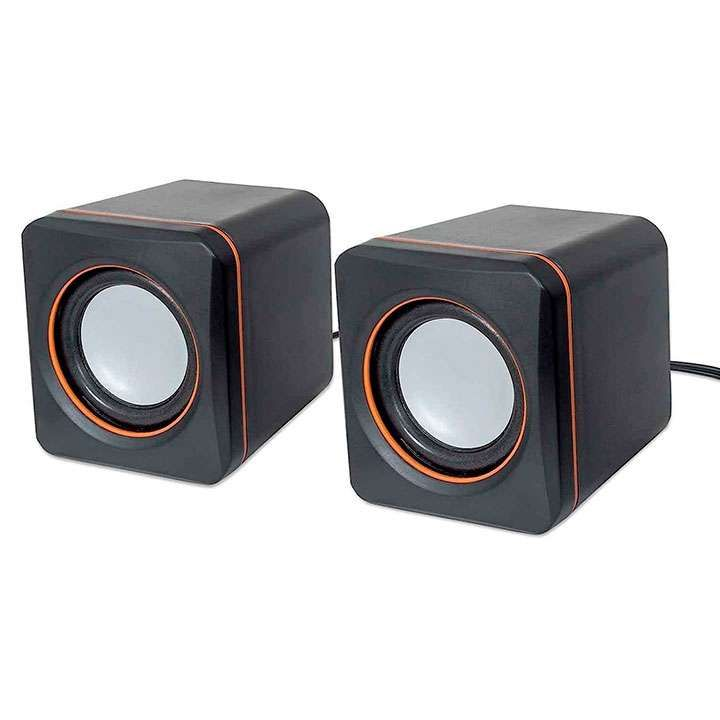
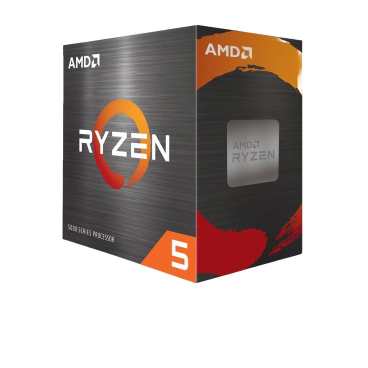
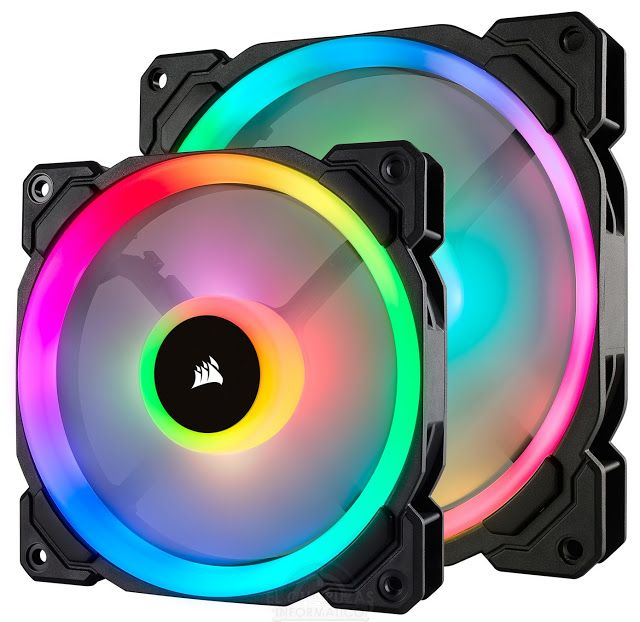
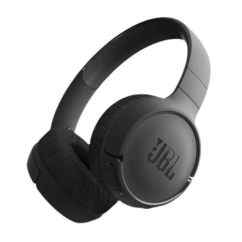
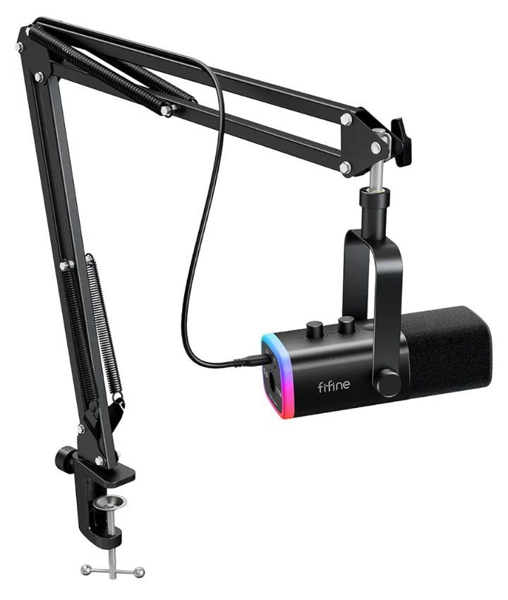

Nuestros Productos
-

CABLE DE RED
El cable de red, también conocido como cable de conexión o patch cord, es un elemento físico utilizado para conectar dispositivos electrónicos.
-

CAMARA WEB
Una cámara web, también conocida como webcam, es un dispositivo de entrada que permite capturar video y transmitirlo a través de una red o internet.
-

CONTROL PS5
El control PS5, también conocido como DualSense, es un accesorio esencial para disfrutar al máximo de los juegos en la consola PlayStation 5.
-

CONTROL XBOX
El control de Xbox es el controlador principal para la videoconsola Xbox de Microsoft y se presentó en la Game Developers Conference en 2000.
-

FUENTE DE PODER
Una fuente de poder es un dispositivo electrónico que regula y filtra la electricidad que recibe un computador para que los circuitos y el funcionamiento.
-

CASE
El case, también conocido como carcasa, chasis, gabinete o caja, es una estructura de metal y plástico que aloja y protege los componentes.
-

LAPTOP
Una laptop, también conocida como computadora portátil o notebook, es un equipo personal que puede ser transportado fácilmente.
-

MONITOR
Un monitor es un dispositivo electrónico de salida que muestra información en forma de imágenes, textos, videos y gráficos generados.
-

MOUSEPAD
La alfombrilla de ratón, alfombrilla posa ratón, almohadilla de ratón o mousepad es la superficie sobre la que se apoya y se desliza el ratón o mouse.
-

PARLANTES
Los parlantes de computadora son dispositivos electrónicos que sirven para reproducir sonido, convirtiendo señales eléctricas o digitales.
-

MOTHERBOARD
La placa madre, también conocida como placa base o motherboard, es la tarjeta de circuito impreso principal de un sistema informático, a la que se conectan.
-

PROCESADOR
Un procesador, también conocido como CPU (Unidad Central de Procesamiento), es el componente principal de un dispositivo electrónico.
-

TARJETA GRAFICA
Una tarjeta gráfica, también conocida como tarjeta de video, placa de vídeo, o adaptador de pantalla, es una tarjeta de expansión de la computadora.
-

TARJETA RAM
La memoria RAM (Random Access Memory) es una memoria volátil de alta velocidad que almacena temporalmente datos e instrucciones.
-

VENTILADOR LIQUIDO
La refrigeración líquida es un sistema de enfriamiento que utiliza un líquido refrigerante para absorber y transferir el calor generado.
-

VENTILADORES
Los ventiladores de computadora son componentes esenciales que tienen la función de disipar el calor generado por los componentes internos de la PC.
-

AUDIFONOS
Los audífonos de computadora son dispositivos electrónicos que permiten escuchar y comunicarse de manera más clara y precisa.
-

SOPORTE MONITOR
Un soporte de monitor es un dispositivo diseñado para colocar y ajustar la posición de un monitor en una mesa o escritorio.
-

MICROFONO
Un micrófono de computadora es un dispositivo de entrada que convierte las ondas sonoras en energía eléctrica, permitiendo la grabación y transmisión.
-

DISCO SOLIDO
Un disco sólido, también conocido como SSD (Solid State Drive), es un tipo de dispositivo de almacenamiento de datos que utiliza memoria no volátil.